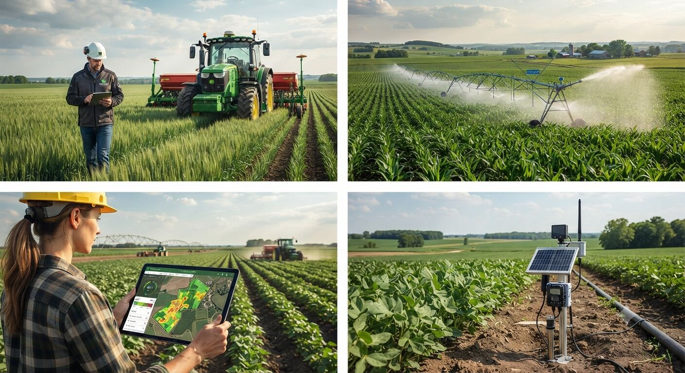

Herramientas orientativas antes de tu consulta
Cuatro calculadoras rápidas, pensadas para darte una primera cifra sobre la que hablar. No sustituyen un estudio técnico, pero te ayudan a llegar con más criterio a la primera llamada.

Herramientas disponibles
🌱 Calculadora orientativa de necesidades de abonado
Estimación de kg/ha de N, P₂O₅ y K₂O según el cultivo, a partir de extracciones medias de referencia.
💧 Simulador de retorno de inversión: riego eficiente y solar
Calcula el ahorro anual y el plazo de retorno de una mejora de riego o una instalación de autoconsumo.
📐 Primer filtro de viabilidad de segregación parcelaria
Comprueba si el resultado de dividir tu parcela superaría la Unidad Mínima de Cultivo de referencia.
🌍 Calculadora orientativa de huella de carbono
Estima las toneladas de CO₂e anuales de tu explotación a partir del gasóleo, la electricidad y el nitrógeno aplicado.
¿La cifra no te encaja o quieres ir más allá?
Estas herramientas dan una primera orientación general. El caso real de tu parcela o explotación siempre requiere revisión técnica personalizada.
Hablar con el ingeniero